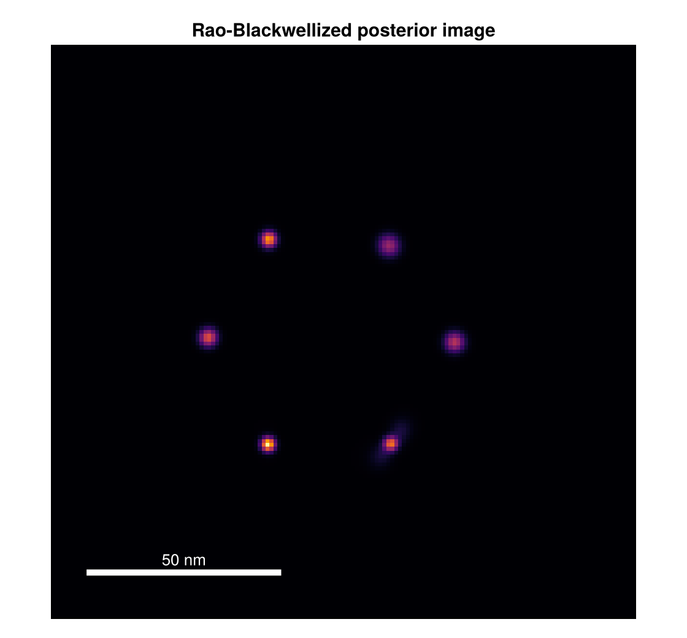
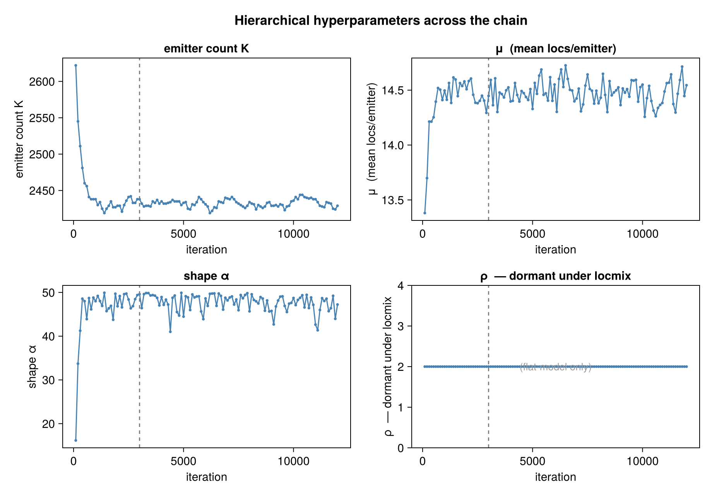
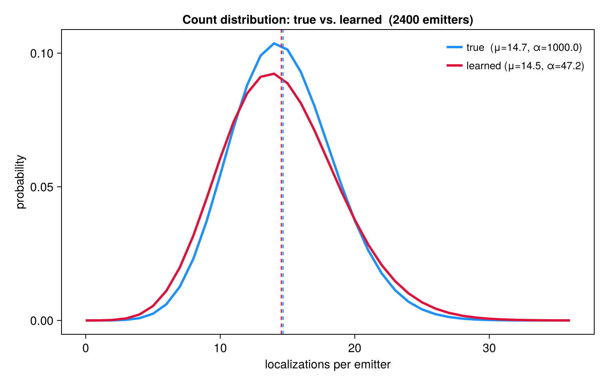

Results Gallery
End-to-end results on simulated data, produced by the standard pipeline: simulate_nmer → run_bagol → compute_report → plot_report / render_report. All figures here are regenerated by docs/make_figures.jl (run under the examples project) so they stay in sync with the code.
The super-resolution gain
A simulated hexamer of emitters, each blinking many times. The raw localizations are an unresolved blur; BaGoL groups them back into the six individual emitters.

Gaussian render of the raw localizations (left) beside the BaGoL MAP-N result (right), same scale and field of view.
The numbers for this run:
| Quantity | Value |
|---|---|
| True emitters | 6 |
| MAP-N emitters | 6 |
| Posterior $P(K = 6)$ | 0.62 |
| Median raw localization σ | 5.9 nm |
| Median MAP-N emitter σ | 1.4 nm |
BaGoL recovers the correct emitter count and tightens the per-emitter position uncertainty roughly fourfold (5.9 nm → 1.4 nm) by pooling each emitter's localizations.
MAP-N against ground truth

Localizations (faint gray), simulated ground-truth positions (cyan), and BaGoL MAP-N emitters with posterior ellipses (red, 2σ). The ellipses sit on the true emitters at a precision the raw data cannot reach.
Posterior image
Beyond a point estimate, BaGoL produces a Rao-Blackwellized posterior image — a super-resolution reconstruction that integrates over the whole chain rather than a single grouping.

The posterior image for the same hexamer: emitter density with uncertainty included, no thresholding.
Diagnostics at a glance


Two of the plot_report diagnostics — the convergence traces and the learned vs. true count distribution. The User Guide explains how to read these to tell whether a run is sane.
Large field: partitioning

A grid of N-mers across a wide field, colored by partition. BaGoL runs each partition in parallel and deduplicates the boundaries.
Reproducing these figures
julia --threads=auto --project=examples docs/make_figures.jlThe script writes PNGs into docs/src/assets/. The same outputs are produced in a normal workflow by plot_report (the diagnostic plots) and render_report (the Gaussian / ellipse renders) — see Standard reports in the User Guide. The examples directory has the full, parameterized workflow scripts these figures are built from.